“Technology can and should empower individuals to change their behavior for the better.”
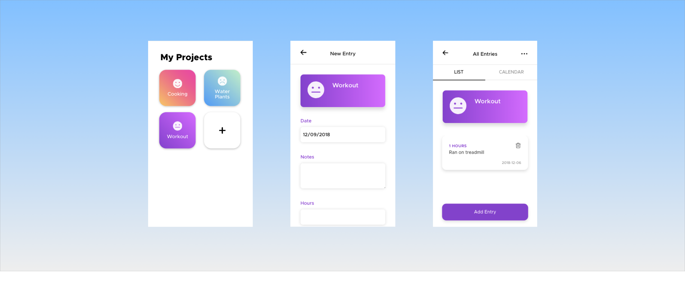
Fall of 2018 I took INFO4340: User Experience and Software Development Studio. I worked with a small group of Information Science students to develop a project tracking app .
User Research
What are the pain points people have with project tracking apps? To delve deeper, we selected target audiences we had physical access to - namely Cornell students, and brainstormed 3 different tasks people would want to track:
-
Someone who wants to learn guitar: this target audience can help us design for people who want to improve a skill
-
Someone who wants to keep track of weight-lifting: this target audience can help us design for people who want to keep track
-
Someone who wants to quit vaping: this target audience can help us design for curtailing an unwanted habit
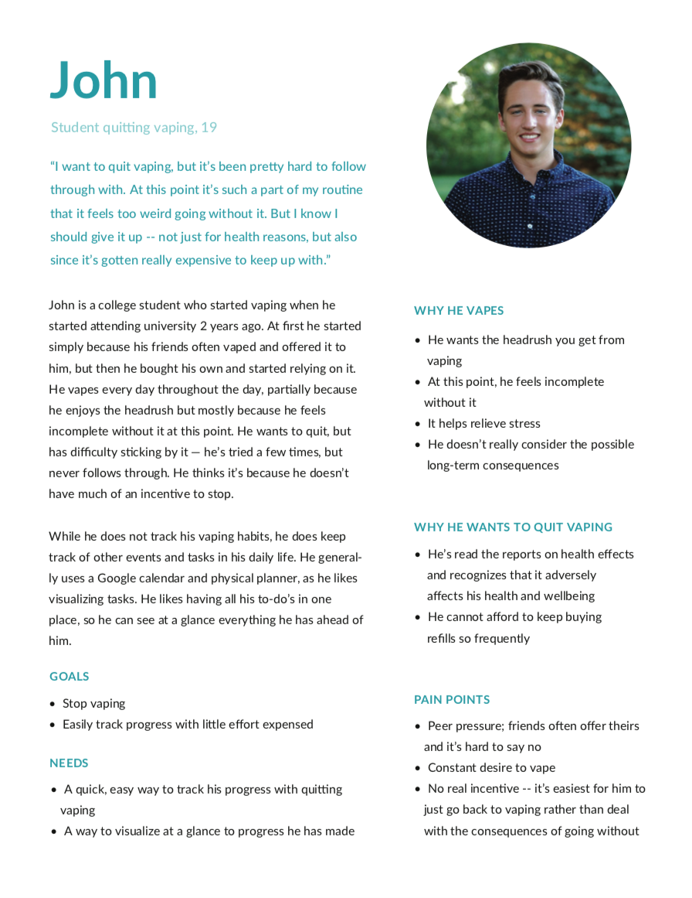
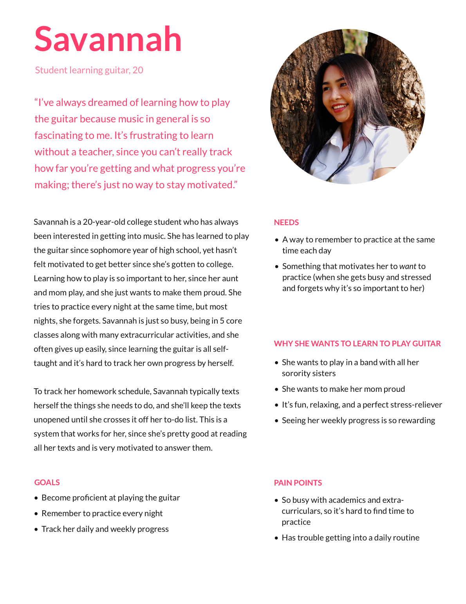
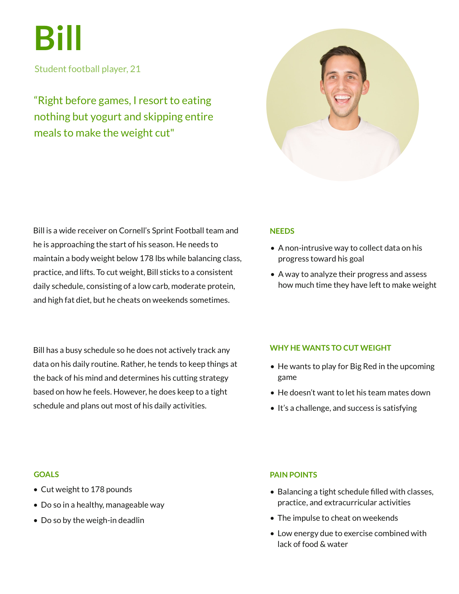
Interview Findings
Through our interviews with potential users, we found patterns in what they had to say:
-
People sometimes need incentive to continue tracking
-
Tracking should be quick
-
Desire to customize
Market Research
Notebook / Pen & Paper
- Our app is more successful and more lightweight because you don’t have to carry around a notebook, can sync wirelessly with computer, phone, etc.
- View entries in multiple formats (example: visuals). Cheaper than notebook. Fast to type than write.
- 100% “customizable” -- up to you how you want to structure tracking
Major competitor: Nomie
- The sophisticated features of Nomie cost money, while our app is free.
- Nomie is not as customizable, it takes a one size fits all approach.
- UI is overcomplicated, can deter user
- Has advanced features like Face ID
Nothing (No Tracking):
- Our app makes it easy to track everything that would be otherwise difficult to remember in your head
- Our app gives a quick, easy visualization of progress that would not be available to those who track nothing
- Our app incentivizes users to complete their tasks and continue documenting, whereas with no tracking, you would have much less incentive to complete your goal
- Doing nothing takes less effort, but will probably reap fewer results
Google Calendars:
- Our app provides the ability to add context through notes and specific measurements as opposed to a single event like in Google Calendar
- Our app incentivizes user to accomplish and continue documents their tasks while Google Calendar has no such feature
Idea Generation
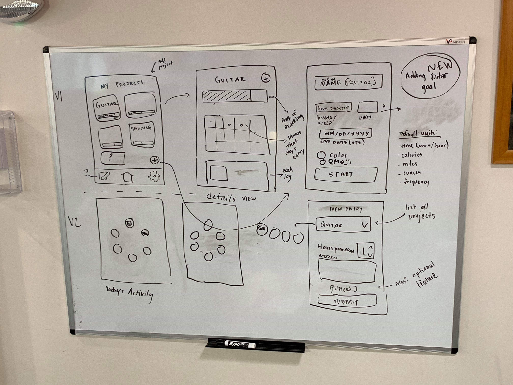
While it does take some of the user’s time to input their entry, we designed the process to require as little information as possible as per the identified user need of minimal effort. Of course, this does take more time than not tracking at
all, however we think that the benefits of our visualization, documentation, and incentivization far outweigh the cost of entry time.
Overall, we see the value of our app compared to alternatives to be the categorization of projects, customization of specific field measurements, visualization of the frequency of entries, and incentivization through the emoji system to
encourage users to continue documenting and accomplishing their goals
Paper Prototype
We used the paper prototype to run through tasks with the potential users. This step of the design process allowed us to test ideas without much time expenditure. Our participants provided feedback on the flow, accessibility, and
discoverability of the UI.
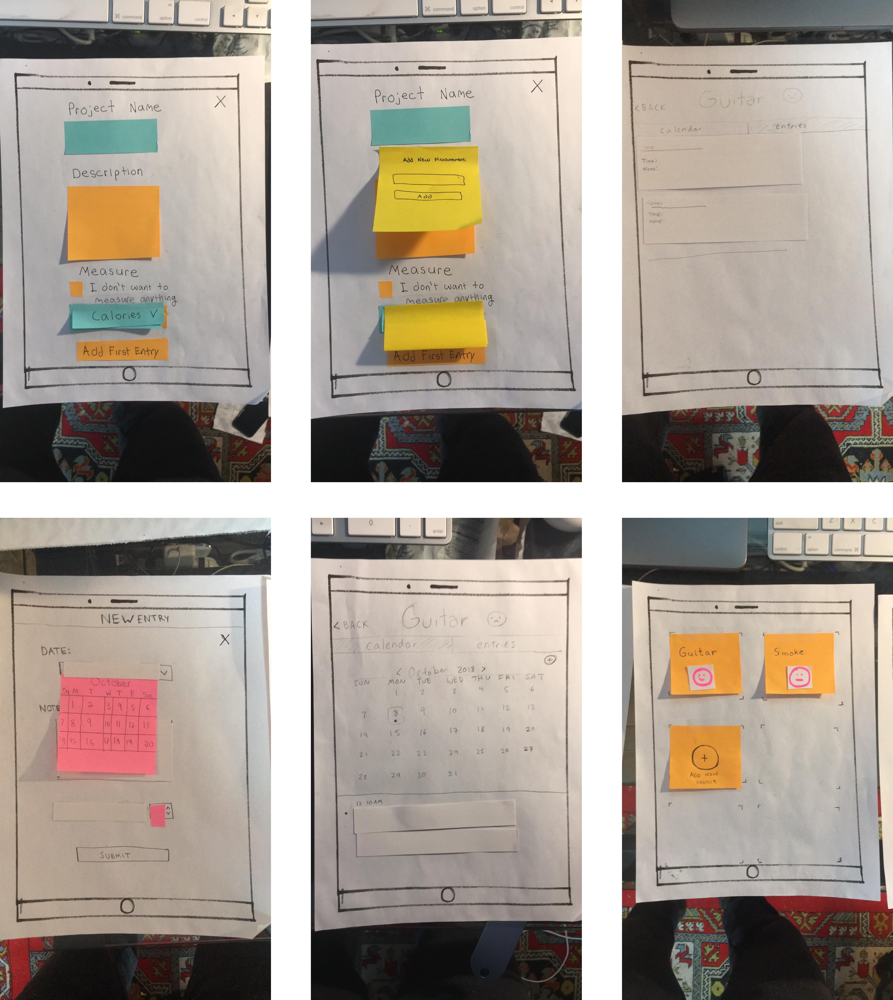
Our Design Revisions:
- Removed checkbox for "no measurement"
- Emphasize visibility of adding a new entry
- "Delete project" within 3-dot menu
Look and Feel
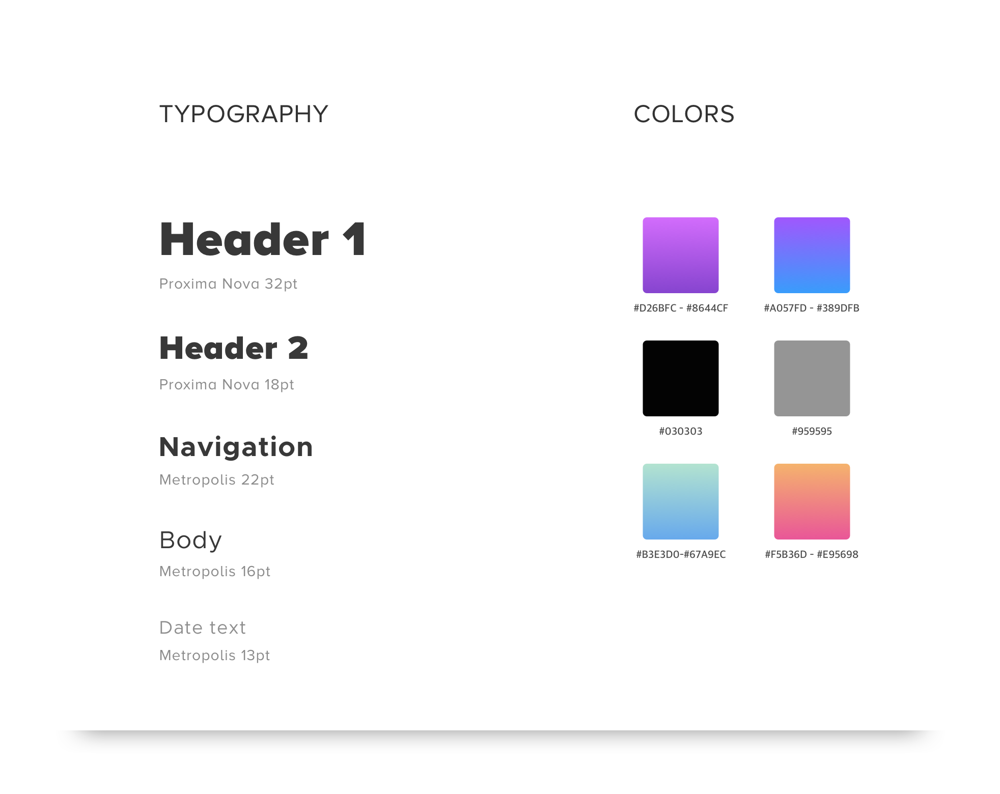
Final Product
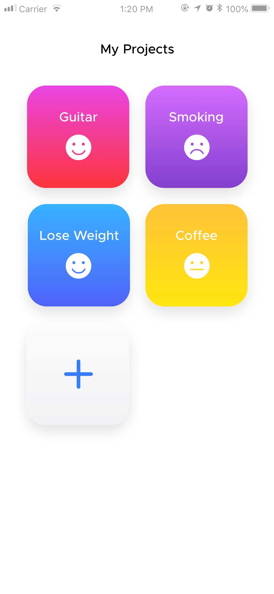
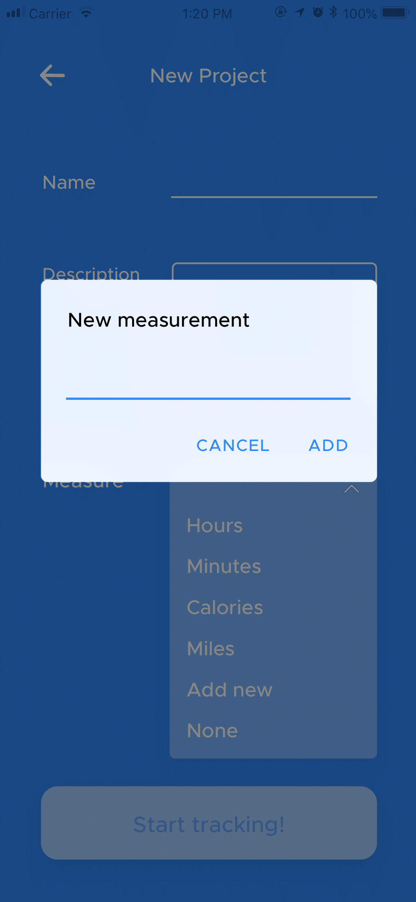
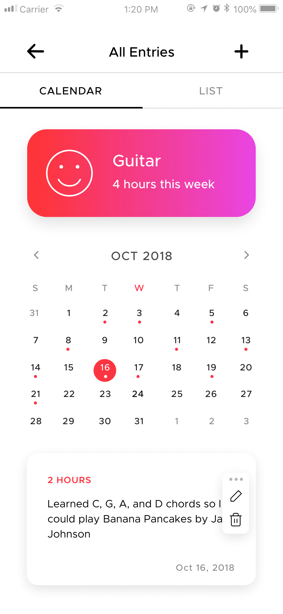
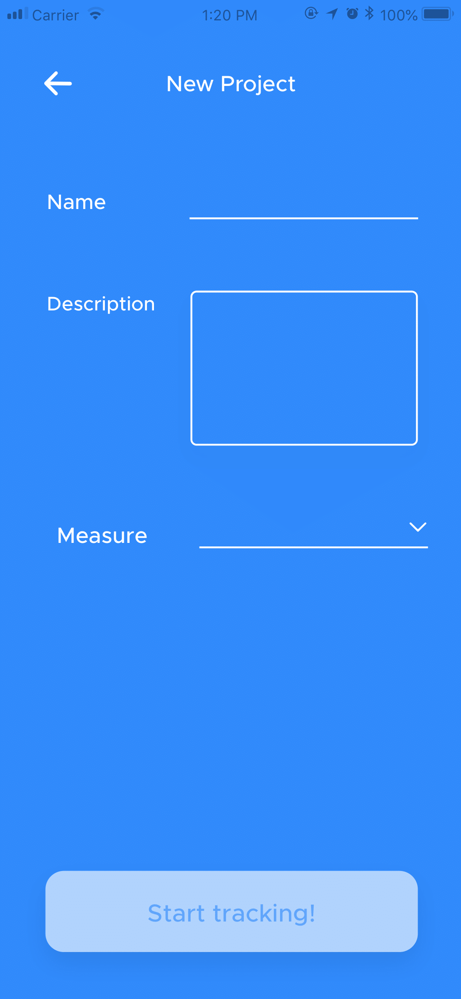
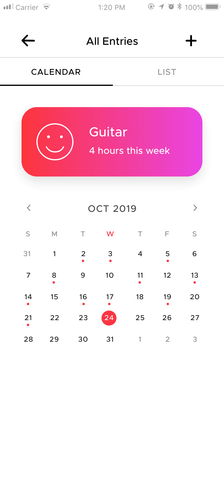
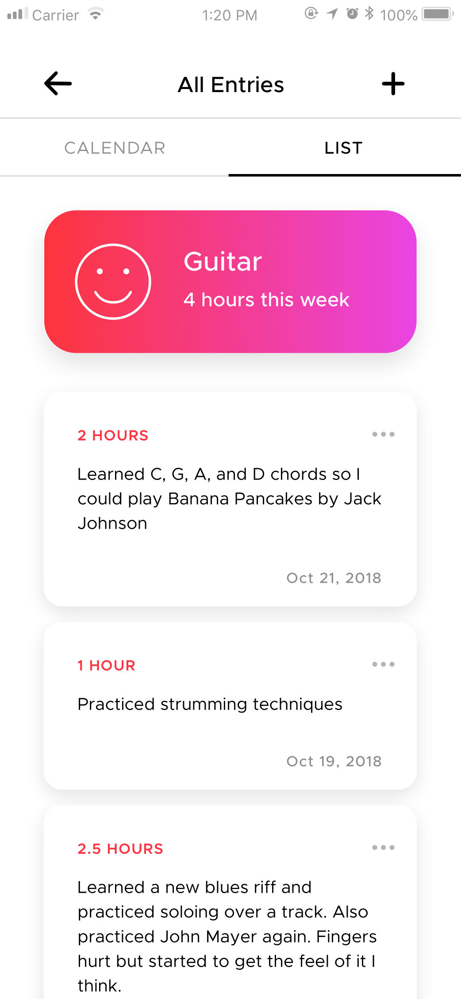
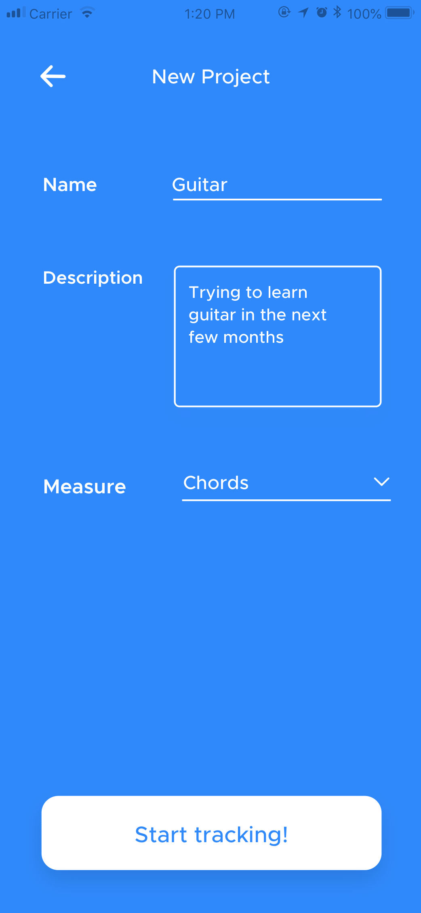
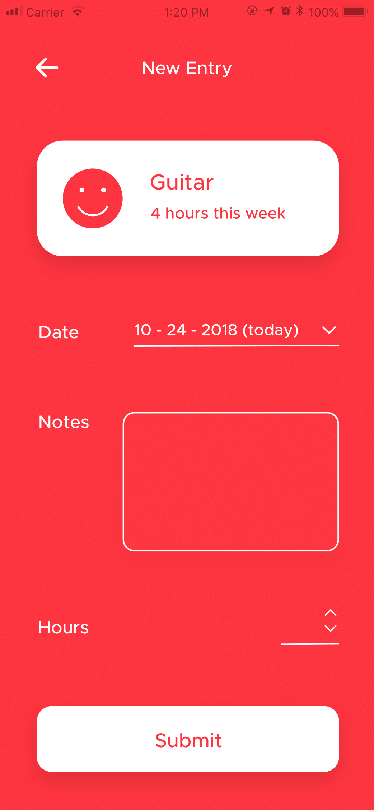
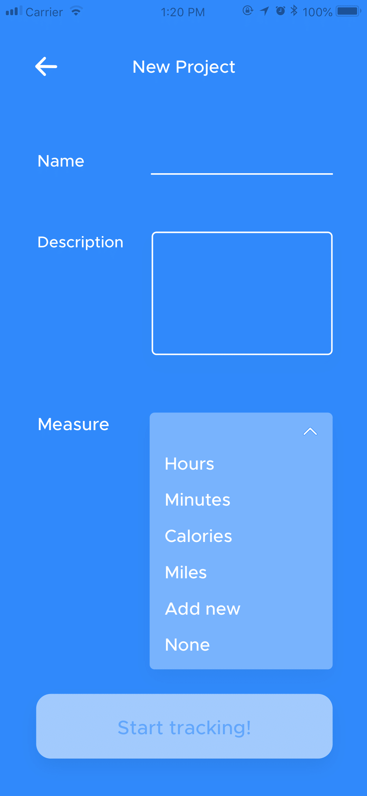
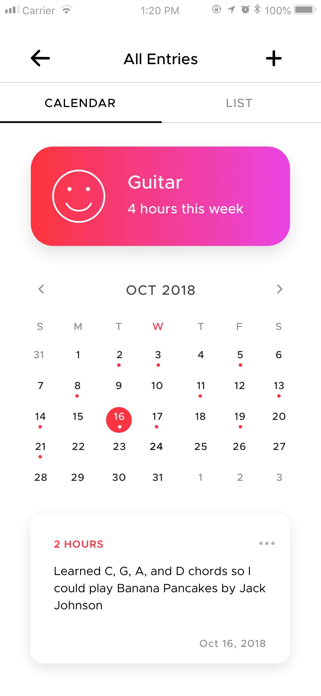
We used Vue, custom CSS, JSON and Javascript to implement the app.
Features:
- Emojis change based on the last time you updated the project
- Integration with Buefy.js calendar to display calendar view
- Users can choose preset units of measurement, none, or custom
Reflection and Future Considerations
This app was my first exploration of behavior design. Some of the choices we made, such as the emojis, really resonated with our interviewees during beta testing. These details are what keep users engaged.
If we were to work on this project further, it would be interesting to add project tracking analytics as an onboarding experience. The app currently is only supported for mobile, be on the lookout for a web version!